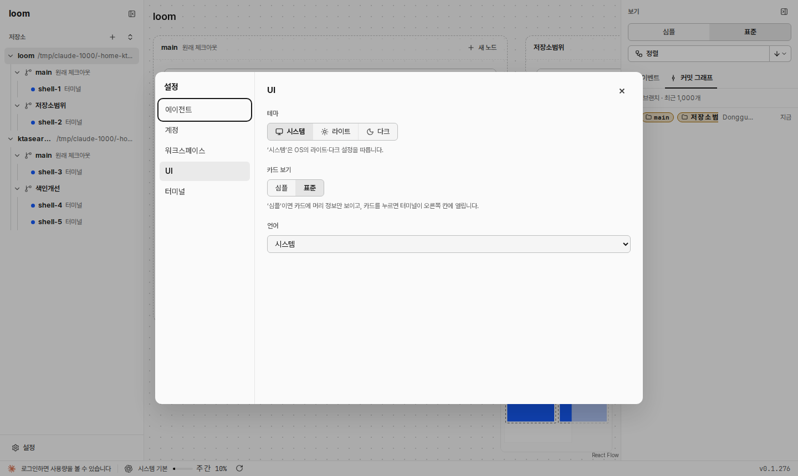
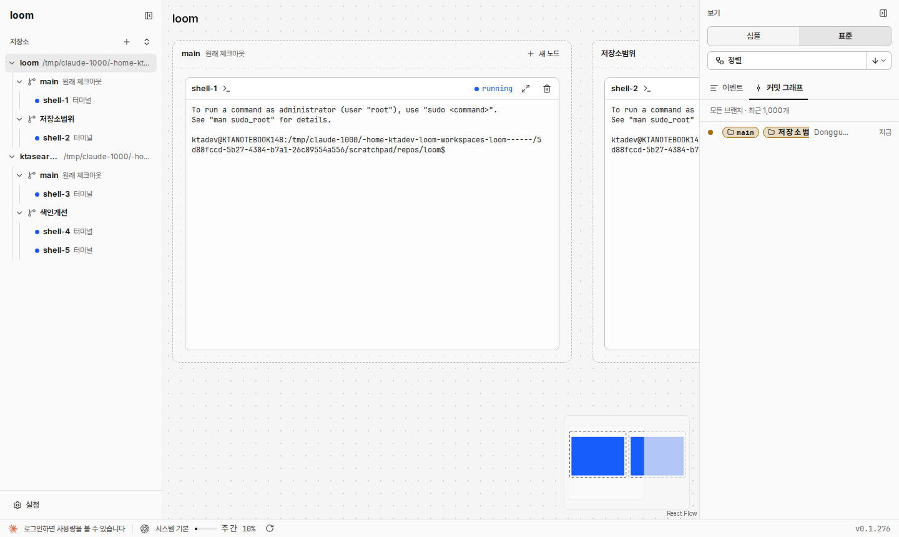

카드 보기와 같은 모양의 두 칸 선택입니다. 값은 설정 DB에 둡니다(카드 보기와 같은 곳). 오른쪽 사이드바 「보기」에는 더하지 않습니다.
지금

새
UI
테마
시스템라이트다크
카드 보기
심플표준
그래프 범위
저장소 하나모든 저장소
‘모든 저장소’면 더한 저장소를 한 그래프에 모두 보입니다. 사이드바에서 줄을 누르면 그 자리로 옮겨 갑니다.
언어
시스템
‘모든 저장소’ 그래프
지금 방식의 화면은 아래 캡처입니다. 새 방식에서는 저장소마다 바깥 상자가 있고 그 안에 워크트리 묶음이 있습니다. 묶음 배치는 지금 규칙(나무 배치, 정렬 방향) 그대로이고, 저장소 상자도 같은 규칙으로 사이드바 순서대로 옆에 늘어섭니다. 그림은 심플 보기이고 카드를 작게 그렸습니다.
지금(저장소 하나)

그래프 위 제목이 저장소 하나(loom)를 말합니다. acme-api를 보려면 사이드바에서 acme-api 줄을 누릅니다.
오른쪽 커밋 그래프도 그 저장소 하나입니다.
새(모든 저장소)
3
loom~/src/loom
main원래 체크아웃새 노드
총괄실행 중
그래프 범위 브리프 검토
opus · high
저장소범위새 노드
코디실행 중
목업 만들기
opus · high
acme-api~/src/acme-api
main원래 체크아웃새 노드
검색총괄끝남
색인 작업 배정
gpt · medium
색인개선새 노드
색인워커실행 중
색인 쿼리 고치기
테스트워커실행 중
회귀 테스트
저장소 줄을 누르면 그래프가 그 저장소 상자로 옮겨 가고, 그 저장소가 「현재 저장소」가 됩니다(옅은 바탕).
워크트리 줄을 누르면 그 묶음으로 옮겨 갑니다(지금과 같음). 노드 줄은 그 카드로 옮겨 가고 고릅니다(지금과 같음). 두 줄 모두 현재 저장소를 그 저장소로 바꿉니다.
그래프 위 저장소 이름은 없습니다. 저장소 이름은 각 상자 머리에 있습니다. 상자 머리에는 단추를 두지 않습니다. [새 워크트리]·[목록에서 빼기]는 사이드바 저장소 줄에 그대로 있습니다. 저장소 상자는 끌지 않습니다. 순서는 사이드바 순서입니다.
커밋 그래프 칸은 현재 저장소 하나를 보입니다. 어느 저장소인지 칸 머리 앞에 저장소 이름을 붙입니다(두 범위 모두). 그래프에서 카드를 골라도 현재 저장소가 그 카드의 저장소로 바뀝니다.